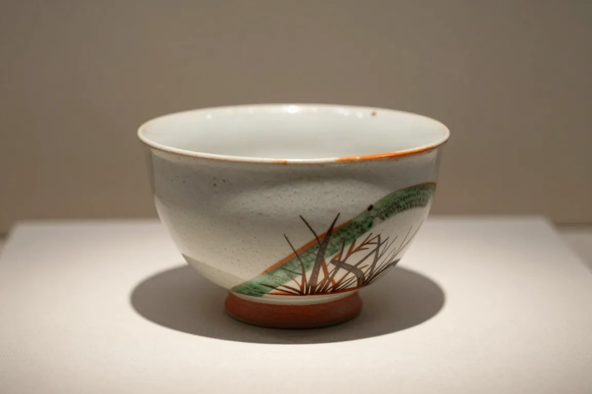

Японская каменная масса для чайной комнаты из печей Мино. Первая белая глазурь сино, зелёная глазурь орибэ и чёрная глазурь сэтогуро ложатся на смелые формы со смелыми расписными линиями.

Главная идея
Японские гончары периода Момояма делают собственную чайную посуду: толстая глазурь, свободная кисть и форма, нарочно изогнутая.
Принципы дизайна
Покрывайте черепок толстой полевошпатовой глазурью, 1–2 мм, чтобы на глазури были проколы и стягивание.
Пишите оксидом железа несколькими быстрыми мазками: трава, мосты, заборы и простые линии.
Изгибайте форму нарочно: вдавливайте борт из круга и позволяйте одной стороне наклоняться.
Делите поверхность: одна часть глазурована зелёным, другая белым или голая.
Обжигайте в ступенчатой печи в восстановлении при 1200–1250 °C.
Оставляйте огненно-оранжевый румянец там, где белая глазурь тонка и проступает глина.
Выбирайте один цвет в глазури и один тон в росписи для каждой вещи.
Подбирайте каждую форму под применение в чайной комнате: чаша, сосуд для воды или чайница.
Антипаттерны
Тонкая ровная глазурь без проколов и луж
Симметричная идеальная круглая форма без наклона
Тонкий печатный узор, скопированный с китайского фарфора